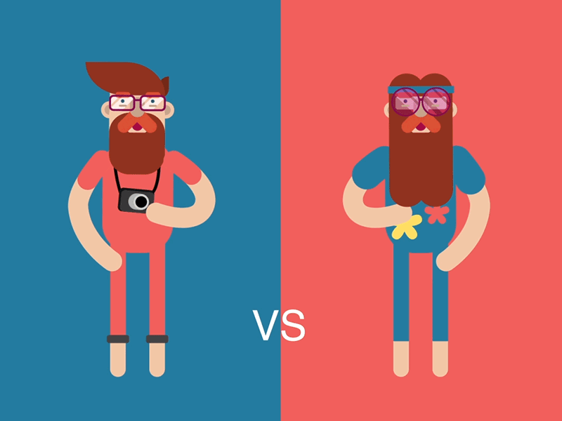

¿Qué es un Hipster?
Con el término hipster, proveniente del inglés, se conoce a una subcultura y una tribu urbana típicas de finales del siglo XX e inicios del siglo XXI en los países occidentales, caracterizada por su alejamiento de las prácticas de consumo cultural consideradas mainstream (“dominantes” o “comerciales”), la valorización de lo vintage o retro, es decir, lo que ya no está a la moda, y de lo indie (“independiente”).
La subcultura hipster tuvo su auge en la década de 2000, en entornos urbanos y bohemios de clase media alta, en los que predominaron la gentrificación y el crecimiento inteligente. Su presencia estuvo asociada a los espacios “underground” o alternativos, a veces incluso tradicionales, así como a un estilo de vestir muy prolijo y alejado de la moda comercial. Sin embargo, el consumo cultural de los hipsters valora particularmente los trends urbanos estadounidenses.
La vestimenta típica del hipster puede variar, pero generalmente abarca el rescate de modas antiguas, como sombreros de ala, estampados con lunares o patrones a cuadros, lentes de sol estilo wayfarer, corbatas de lazo, y gafas de pasta. Los hombres generalmente cultivan barbas largas y usan ropas estilo leñador (lumbersexual).
El resultado es un look bohemio con un toque intelectual, ya que la moda hipster no está exenta de ironías: el “consumo irónico” es una conducta típica de esta subcultura, y consiste en consumir productos culturales de poca valía, como una forma de burla hacia la cultura de élites.
Origen

El término hipster surgió en los Estados Unidos en la década de 1940, como una deformación del término hepcat, empleado para nombrar a los conocedores de la subcultura afroamericana emergente, especialmente en el ámbito del jazz. Distintos movimientos estéticos y artísticos se vincularon con lo hipster en esa época, como los miembros de la generación beat, por ejemplo. En general, se empleaba para nombrar a los blancos seguidores del hot jazz y el boogie woogie.
Sin embargo, a finales del siglo XX el término reapareció con las connotaciones actuales, asociado a los jóvenes menores de 30 años de las clases medias y altas, cuyos patrones de consumo cultural se alejan de lo establecido y persiguen lo indie. La actitud irónica y cierta dosis de narcisismo se hicieron típicos de esta tribu urbana, considerada a menudo entre las primeras en tener su apogeo y pasar de moda en el siglo XXI.
Sin embargo, su presencia fue lo suficientemente notable como para inspirar una serie de libros, manuales y abordajes creativos que intentaban, irónicamente, definir lo hipster y establecer sus límites estéticos.
Características
Subcultura
La subcultura hipster se centra mayormente en el consumo de lo indie, es decir, de la música independiente y el Lo-fi. En ella se valora la cultura más alejada de lo comercial, poco organizada y con intereses artísticos más “puros”.
Sin embargo, sus géneros musicales predilectos pueden ser muy variados, yendo desde las variantes contemporáneas del punk y el rock (post-rock, grunge, rock alternativo, indie rock, britpop) hasta la música electrónica (trip-hop, techno, chill-out). En general, las bandas independientes de habla inglesa como The Black Keys, Beach House o Bon Iver son icónicas del gusto hipster.
En cuanto a la literatura, la subcultura hispter valora los clásicos y cultiva un gusto más bien conservador, a pesar de que los autores rupturistas y la poesía de mediados del siglo XX tienden a valorarse. En general, se trata de una subcultura artsy, que se aleja del mundo comercial y de los negocios, para rescatar una postura bohemia más o menos moderada.


Diferencias entre Hipster y Hippie
Los hipsters y los hippies tienen en común su rechazo al consumismo y al sistema capitalista y sus negocios. Sin embargo, la postura de los últimos es mucho más extrema, llegando al punto de vivir en comunas alejadas de la vida urbana y del trabajo de oficinas, abrazando un ideal de la vida libre y de la naturaleza que no parece estar entre los intereses de los hipsters, hijos de la urbe y del capitalismo contemporáneo.
Ideológicamente, la postura hipster parece ser la del consumo responsable, el activismo verde y el capitalismo con un rostro humano. En cambio, los hippies se proponen vivir al margen del capitalismo industrial.
En cuanto a la moda y los patrones de consumo cultural, los hippies tienden mucho más al New Age y al abandono de los patrones estéticos occidentales: cultivan una apariencia mucho más simple, bordeando en lo descuidada, contraria casi al cuidadoso look vintage que los hipsters cultivan a través de ropas pasadas de moda.
